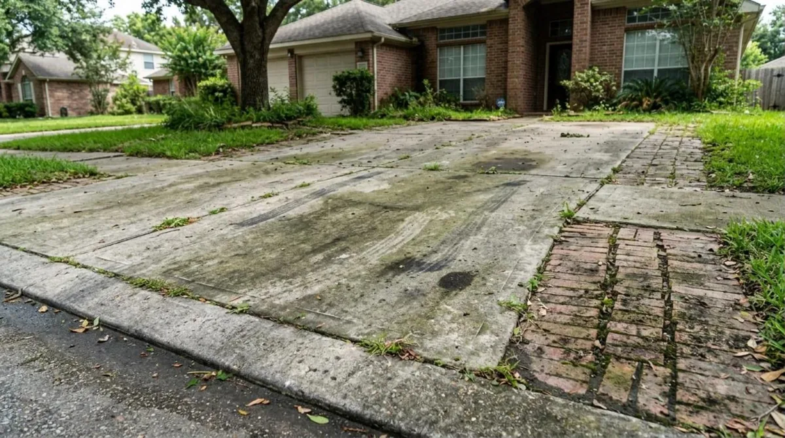
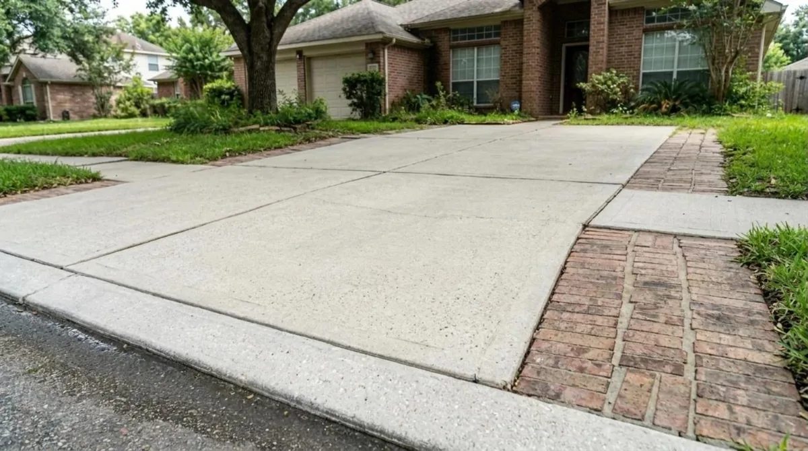

Houston pressure washing, done right.


Look closer
What needs cleaning? Tap one. We’ll set up the right visit.
What we do
House washes, driveways and patios cleaned the safe way, with before and after photos on your phone.
- House soft washLow-pressure wash that lifts green algae and mildew off siding and brick without damage.Learn more about house soft wash →
- Driveway and flatworkConcrete driveways, walks and garages cleaned with a surface cleaner for an even finish.Learn more about driveway and flatwork →
- Patios and pool decksSlippery green film and stains removed from patios, pool decks and covered porches.Learn more about patios and pool decks →
- FencesWood and vinyl fences washed gently so the grain stays smooth.Learn more about fences →
- Roof soft washBlack streaks and moss lifted from shingles with a soft wash, never a pressure jet.Learn more about roof soft wash →
- Gutters and storefrontsBlack streaks brightened on gutters, and weekly or monthly glass and sidewalk routes for businesses.Learn more about gutters and storefronts →
The Free On-Site Quote
A tech walks your property, points out what will and will not come clean, and gives you a written price the same day.
- Walk-around with youWe check siding, brick, concrete and trim for the right method.$75 value
- Honest results talkWe tell you what washing can fix and what it cannot, like etched stains or peeling paint.$50 value
- Written price, tax includedHouston’s 8.25% sales tax is already in every price.Included
- Before photosSaved so you can compare after.Included
How it works
- 1Book onlinePick a day and time. It lands on our calendar right away.
- 2We text before we arriveYou see who is coming and when.
- 3See the before and afterPhotos and your invoice land on your phone when we finish.
- Insured, with general liability coverage on every job
- Backflow preventer on every customer spigot
- Wash water kept out of storm drains, as TCEQ requires
Annual house wash
Annual house wash
$39/mo
- One house wash a year
- 15% off any add-on
- Rain-date priority
Twice-a-year wash
$69/mo
- House wash spring and fall
- Driveway once a year
- 15% off add-ons
Questions
How much does a house wash cost in Houston?
Most homes run about $250 to $600 for a soft wash, depending on size and how much green growth there is. Driveways usually run $150 to $300.
Is pressure washing safe for my siding and plants?
Yes, when it is done right. We soft wash siding at low pressure and soak and cover your plants first, then rinse them again after.
Do I have to be home?
No. We need access to a spigot, an unlocked back gate and closed windows. You get photos when we finish.
Do you charge sales tax?
Yes. Texas taxes exterior cleaning, so every price we quote already includes the 8.25% Houston sales tax.
Where does the dirty water go?
Not into the storm drain. Texas rules keep soapy, oily water out of storm drains, so we direct it to the lawn or reclaim it on business jobs.
Book a free quote.
No cost, no obligation. If rain is in the forecast on your day, we move you for free.